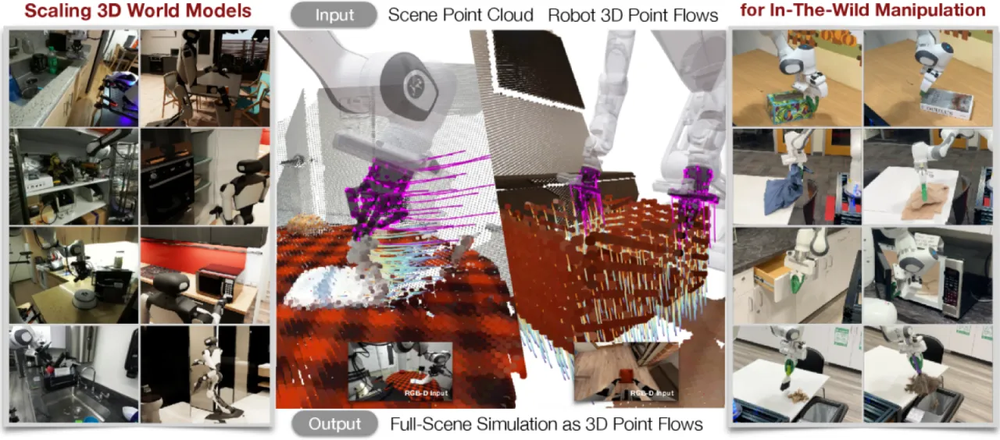
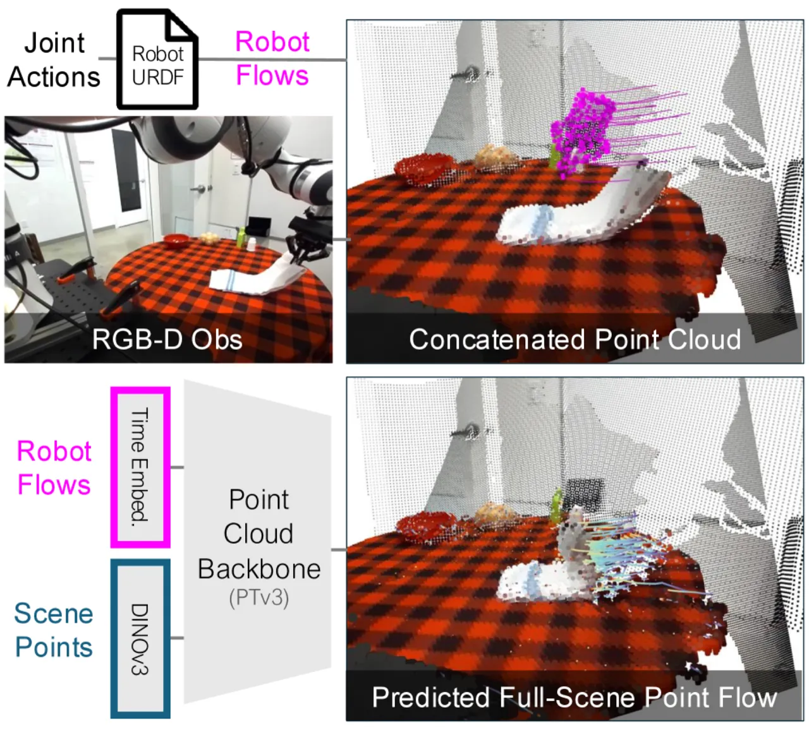
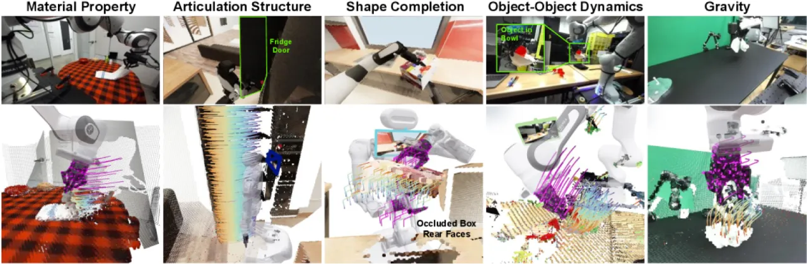
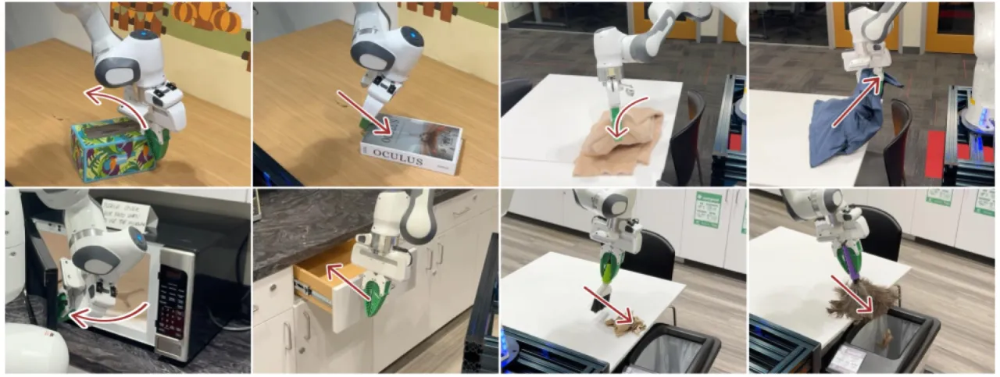
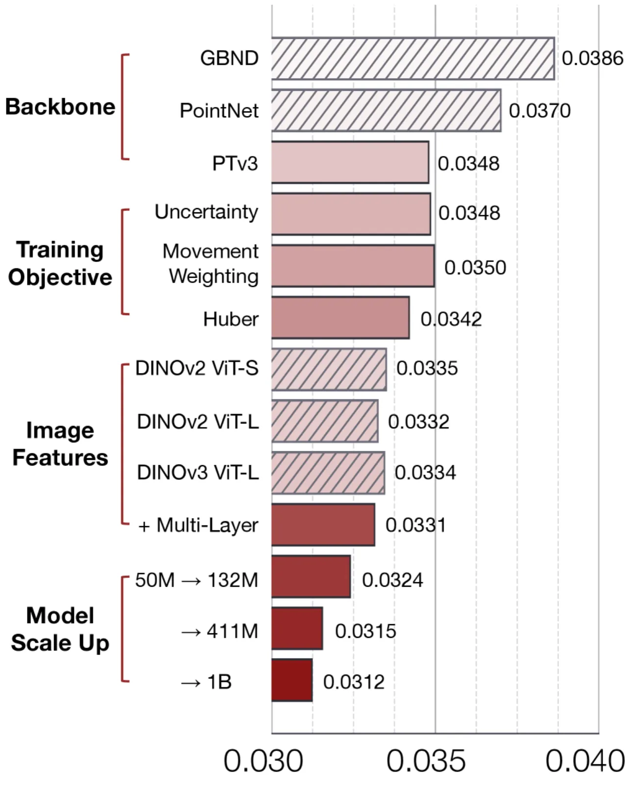

PointWorld 提出以 3D 点流（point flow）统一表示机器人状态与动作，训练一个从 RGB-D 图像和机器人动作命令预测三维逐像素位移的大型世界模型。模型在约 200 万条轨迹（~500 小时）的真实与仿真混合数据上预训练，实现 0.1 秒推理速度，单一检查点即可无需额外示范地在真实 Franka 和双臂人形机器人上执行多样化操作任务。
机器人操作长期依赖任务专用模型或精确感知管线，难以泛化到"野外"（in-the-wild）环境。作者指出，人类能仅凭一眼和对动作的构想就预测三维世界如何响应——这种能力对机器人操作至关重要。现有方法要么依赖对象先验、要么局限于二维外观，无法捕获精细接触动力学。
"Humans anticipate, from a glance and a contemplated action of their bodies, how the 3D world will respond, a capability equally vital for robotic manipulation."
"Unification for scaling: represent state and action in the same modality of 3D physical space."

核心洞察：将场景点云（scene point flow）与机器人点流（robot point flow）统一于同一三维物理空间，摆脱对象级标注和具身形态假设，实现跨机器人、跨任务的规模化学习——类比语言模型中的 next-token prediction，但面向三维空间与时间上的交互。
PointWorld 将状态和动作均表示为三维点流：场景状态由 RGB-D 反投影得到的点云描述，机器人动作由基于 URDF 正向运动学采样的机器人表面点流描述。模型在单次前向传播中以 chunk 形式（H=10 步）预测未来帧的逐点三维位移。

从 RGB-D 图像中遮罩掉机器人区域后反投影剩余像素，得到场景点云。与现有方法不同，PointWorld 不需要对象先验（objectness prior），仅使用原始几何与外观。场景点用冻结的 DINOv2 特征编码外观信息。逐帧点对应关系仅在模型"想象"推理阶段维护。
通过 URDF 和正向运动学在机器人表面各链接上采样点，生成具身无关（embodiment-agnostic）的机器人点流表示。这种方式是"fully, rather than partially, observable"——完整暴露机器人几何，而非仅用末端执行器位姿或关节角。实验中每个 gripper 采样 300–500 点以平衡效率与接触推理能力。
将场景点与机器人点拼接成单一点云后由 PTv3 backbone 处理。训练面临两大挑战：(i) 稀疏训练信号（仅约 1–5% 的点在运动），(ii) 真实世界深度噪声。解决方案：

PointWorld 在三个维度验证：(1) backbone 架构对比；(2) 数据与模型规模的 scaling law；(3) 跨域泛化与真实世界操作。数据集涵盖 DROID（D，大规模真实操作）、BridgeV2（B，家庭场景）及私有人形机器人数据（H），评测指标为 ℓ₂ mover error（动态点）和 ℓ₂ static error（静态点）。
| Backbone | Params (相对) | ℓ₂ mover ↓ | ℓ₂ static ↓ | Latency (ms) |
|---|---|---|---|---|
| GBND (基线) | 1.00× | 0.0390 | 0.0066 | 13.46 |
| PointNet | 1.03× | 0.0369 | 0.0084 | 5.93 |
| SparseConv | 33.31× | 0.0396 | 0.0076 | 17.70 |
| Transformer | 41.06× | 0.0339 | 0.0071 | 30.43 |
| PTv3-50M | 49.14× | 0.0331 | 0.0067 | 59.60 |
| PTv3-411M | 398.67× | 0.0315 | 0.0059 | 102.47 |
| PTv3-1B | 957.71× | 0.0312 | 0.0056 | 123.65 |
PTv3-1B 在动态点误差上以 0.0312 达到最优，比 GBND 基线降低约 20%。延迟 123.65 ms 仍满足实时操作需求（约 8 Hz）。

"Scaling model size from 50M to 1B parameters yields smooth, log-linear gains" — consistent with "scaling-law observations in vision and language modeling."
| 设置 | ℓ₂ mover（Zero-Shot） | ℓ₂ mover（Finetuned） |
|---|---|---|
| D→D（域内） | 0.0315 | — |
| B→B（域内） | 0.0087 | — |
| D→B（跨域） | 0.1460 | 0.0107 |
| B→D（跨域） | 0.0558 | 0.0378 |
| D→H（held-out 真实） | 0.0305 | 0.0271 |
| D+B→H（联合） | 0.0300 | 0.0272 |
| Specialist（从零训练） | 0.0293 | — |
零样本跨域迁移（D→H）误差 0.0305 与从零训练 Specialist（0.0293）接近；少量微调后进一步降至 0.0271。体现预训练世界模型的强泛化能力。

模型假设任务开始时场景处于静态；无法处理动态初始状态（如运动中的物体）。
当前需通过 GUI 或 VLM 手动指定任务目标，缺乏自动奖励推断能力，限制了系统的自主性。
对细粒度小物体操作表现欠佳；对深度传感器噪声和相机标定误差较为敏感，影响点云质量。
模型从交互数据中学习统计相关性，无法区分因果机制，可能在分布外场景产生错误预测。
仅预测几何位移，不对外观变化（光照、颜色、纹理）建模，限制了在需要感知外观变化任务上的应用。
假设机器人具有刚体结构；无法建模可变形末端执行器（如软体夹爪）。
假设动作被精确执行且点追踪准确；真实场景中追踪失败可能导致预测误差累积。
隐式学习物理规律，未编码守恒定律或物理约束，可能在极端或罕见物理场景下泛化不佳。